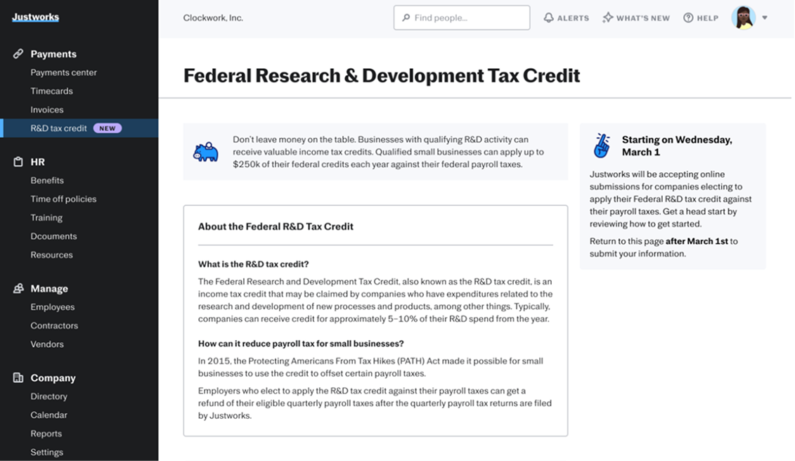
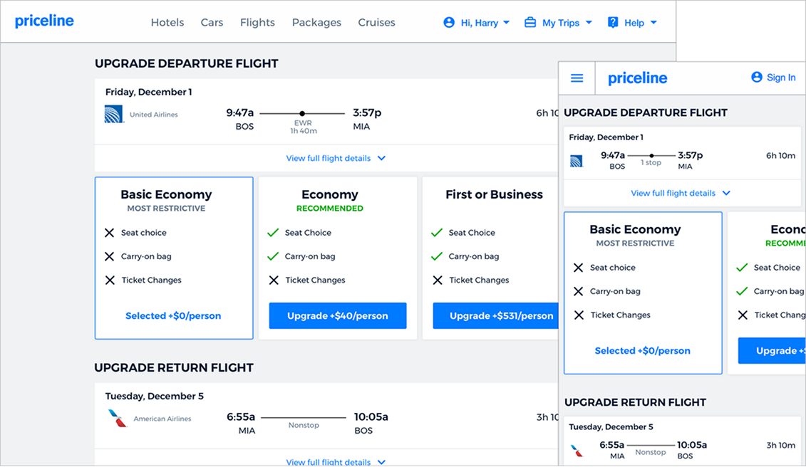

👋🏼 Hi, I'm Annelise. I'm a staff product designer who's spent 15+ years making hard things feel simple — for travelers booking flights at Priceline, pet owners navigating care at Fuzzy, and entrepreneurs managing payroll and taxes at Justworks. I build practices as much as products, and I'm drawn to work where the systems are complicated but the experience doesn't have to be.
At a glance

Deep dives
-

Justworks R&D Tax Credits
Increasing the amount of eligible customers claiming the R&D tax credit while reducing the time to review submissions.
-

Fuzzy Pharmacy
Finding product market fit with new product vertical, prescriptions.
-

Priceline Flight Fare Brands
Creating a system to add over 200+ airline’s fares into the existing flights experience.